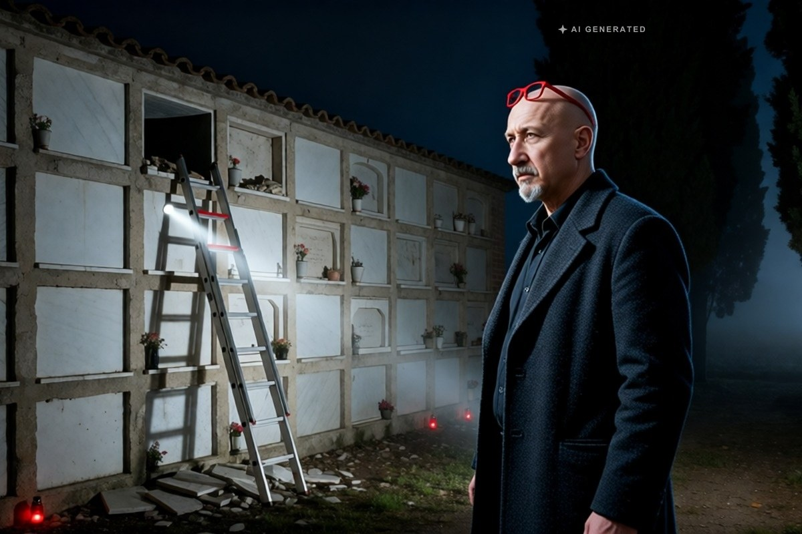

Cronaca · 1 novembre 2026
Montebelluna, profanata la tomba di un patriarca rom: bara estratta dal loculo

La lastra in frantumi, il cemento sbriciolato, una bara da 200 chili tirata fuori a metà e un angolo forzato con il piede di porco. I carabinieri seguono due piste: il furto di un corredo funebre o uno sfregio.
di Franco Zanghì
La mattina di giovedì 29 ottobre, nel cimitero di Montebelluna, in provincia di Treviso, il loculo più in alto del blocco di fronte all'ingresso era sventrato. La lastra di marmo in frantumi, il diaframma di cemento sbriciolato. La bara, che pesa circa 200 chili, era stata tirata fuori a metà. Per terra c'erano i vestiti che la famiglia aveva deposto accanto al defunto, e dal loculo pendeva un tappeto.
Lì era sepolto Muharem Salkanovic, capostipite di una delle famiglie rom più numerose della Marca trevigiana, morto di Covid a 65 anni quasi cinque anni fa.
Come è stata scoperta
I primi ad accorgersene sono stati un uomo che vive in una roulotte nel prato a nord del cimitero e una fiorista che ha il chiosco vicino al parcheggio. Il custode ha chiamato i carabinieri, la polizia locale e Contarina, la società che gestisce il cimitero.
Secondo la ricostruzione degli investigatori chi è entrato lo ha fatto di notte, dal retro, attraverso i campi, dove le telecamere non arrivano. Ha usato la scala di servizio del cimitero, quella che serve per mettere i fiori nei loculi alti. Poi mazzetta, piccozza e piede di porco: la bara è stata tirata fuori solo in parte e con il piede di porco si è tentato di aprirla, rovinandone un angolo. La bara non risulta aperta.
I carabinieri di Montebelluna hanno controllato le telecamere dell'ingresso e dei due parcheggi laterali. Ma se gli autori sono arrivati a piedi dai campi, scavalcando il lato che le telecamere non coprono, è difficile che lì dentro ci sia qualcosa di utile.
Le due piste
La prima è il furto. In alcune famiglie rom c'è l'usanza di seppellire i defunti con oro, gioielli e oggetti che sono stati loro in vita. Per un capostipite quel corredo poteva essere un piccolo tesoro, e su quella tomba da tempo giravano voci. Il colpo, dicono gli investigatori, sembra preparato: chi è entrato sapeva dov'era il loculo, e forse che cosa ci poteva trovare.
La seconda pista è un messaggio: uno sfregio contro il ramo dei Salkanovic, per colpire i vivi attraverso un morto. Gli inquirenti non escludono contrasti per soldi o affari con altri gruppi, e in quel caso le indagini potrebbero allargarsi al Veneziano, al Padovano e fino al Piemonte.
Il funerale di quasi cinque anni fa
Il funerale di Salkanovic, nel gennaio del 2021, era stato blindato. Dopo una riunione in prefettura si decise che al cimitero potessero entrare solo quindici persone, con i carabinieri a controllare, perché i parenti arrivavano da tutto il Nordest e dalla Croazia. Niente messa: la famiglia è musulmana.
Oggi più di venti familiari sono rimasti davanti alla tomba per gran parte della giornata. Quando gli investigatori se ne sono andati hanno rimesso la bara nel loculo, ci hanno messo accanto vestiti nuovi e hanno coperto tutto con un telo di nylon. Adesso aspettano una lastra nuova, con il nome e la dedica.
Il punto
Credo alla prima pista, il furto. Chi vuole lanciare un avvertimento rompe una lastra, imbratta una tomba e se ne va. Non sale su una scala di notte, non sfonda il cemento a colpi di mazza, non si mette a tirare fuori una bara da 200 chili. Questo è il lavoro di chi cercava qualcosa dentro. E se la bara è rimasta chiusa, è perché qualcosa li ha fermati: un rumore, il tempo, o gli attrezzi sbagliati.
Qualunque sia la verità, una cosa non cambia: aprire la tomba di un uomo per prendergli quello che si è portato via, o per usarla come lavagna di una vendetta, è un gesto vile. Il rispetto per i morti non ha nazionalità e non ha religione.
Resta una domanda che riguarda tutti. Un loculo in alto è stato aperto di notte, con la scala del cimitero lasciata a disposizione, da un lato dove le telecamere non guardano. Nel giorno dei morti migliaia di famiglie entrano nei cimiteri a portare un fiore. Ma di notte, quando i cancelli si chiudono, chi li sorveglia?
Fonti
- Tribuna di Treviso, Enzo Favero, «A Montebelluna profanata la tomba del patriarca rom Salkanovic: bara estratta dal loculo», 30 ottobre 2026
- Il Gazzettino, «Profanata la tomba del capofamiglia rom: i ladri cercavano oro e gioielli», 30 ottobre 2026
- TrevisoToday, «Vandali in cimitero, profanata la tomba del capo rom Muharem Salkanovic», 30 ottobre 2026
- Corriere del Veneto, Denis Barea, cronaca di Treviso, 30 ottobre 2026
- Tribuna di Treviso, «Obitorio e funerali blindati per il capo rom morto di Covid a Montebelluna», 5 gennaio 2021
Sulla data della morte le fonti non coincidono: l'articolo del gennaio 2021 indica il 31 dicembre 2020, le cronache di questi giorni parlano genericamente del gennaio 2021. Nel testo si è scelto «quasi cinque anni fa». Le due piste sono ipotesi investigative e non risultano indagati.